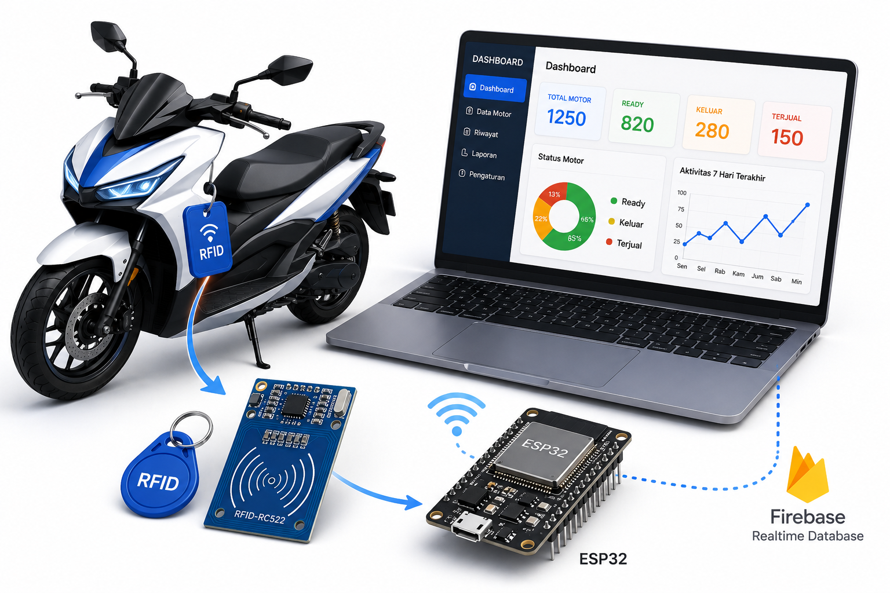

Sistem ini membantu proses monitoring stok kendaraan menggunakan RFID, ESP32 dan Firebase Realtime Database secara realtime.

Scan RFID untuk mendeteksi UID motor secara otomatis.
Semua data tersimpan pada Firebase Realtime Database.
Status stok berubah secara realtime.
Monitoring stok motor dengan grafik interaktif.
Sistem Monitoring Stok Motor Hafiz Motor merupakan sistem berbasis Internet of Things yang menggunakan RFID RC522, ESP32, Firebase Realtime Database serta Website Admin untuk memonitor stok kendaraan secara realtime.